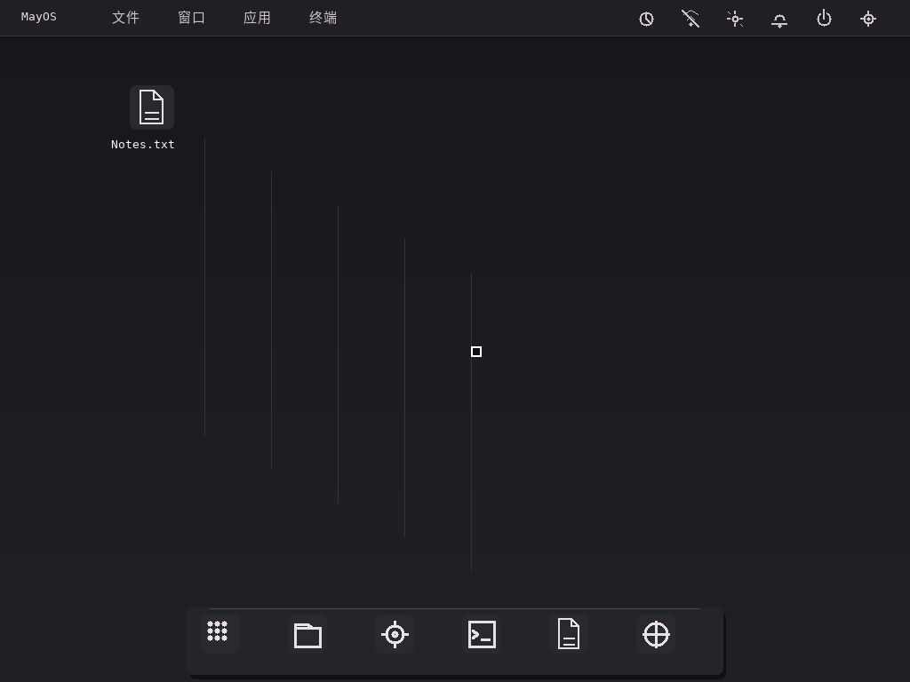

See it run
真正运行，
不只停留在想象。
从固件启动到图形桌面，完整记录 MayOS 的两条 UEFI 启动路径。画面采集自真实 QEMU framebuffer。
MayOS 0.3.0-pre2 · QEMU / UEFI x64 · 10 FPS
Verified screenshot
真实桌面截图
来自 QEMU 启动测试的实际 framebuffer 截图，非设计效果图。

可验证的启动记录
每段录像附带源码提交、ISO 和视频 SHA-256、帧率与录制方式。两段使用同一构建 ISO，不以合成界面替代真实启动画面。查看验证方法